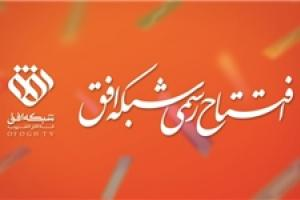
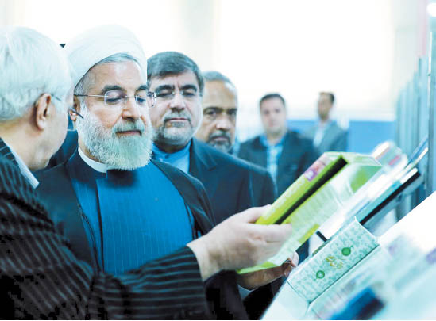
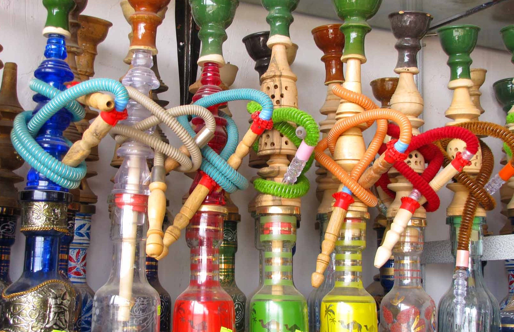
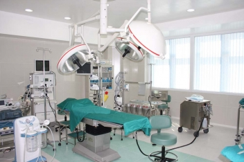

شبکه «افق» رسما آغاز به کار کرد

شبکه تلویزیونی افق متعلق به گفتمان انقلاب اسلامی پس از گذراندن دوره آزمایشی امروز به صورت رسمی آغاز به کار کرد.
به گزارش فرهنگ نیوز، شبکه تلویزیونی افق طبق وعده از پیش داده شده، امروز 8 اسفند راس ساعت 17 با شعار «نگاهت را به افق بسپار» به صورت رسمی افتتاح شد.
بنا بر این گزارش، این شبکه تلویزیونی با پخش سرود جمهوری اسلامی که برای تولید آن بیش از یکسال زمان گذاشته شده آغاز به کار کرد و در ادامه فردی از قاریان ممتاز کشورمان به قرائت آیاتی از قرآن کریم پرداخت.
اجرای ویژه برنامه افتتاح رسمی شبکه افق را نادر طالب زاده بر عهده دارد.
طالب زاده در آغاز مراسم افتتاح رسمی این شبکه گفت: شبکه افق متعلق به گفتمان انقلاب اسلامی است و 35 سال است که جای این شبکه خالی است. شبکه افق آرزوی شهید مرتضی آوینی بود.
مشكلات كتاب و كتابخواني هم بهگردن رسانهها افتاد!

رئیسجمهور در مراسم آغاز به کار نمایشگاه کتاب تهران از عملکرد رسانهها در معرفی نکردن کتاب انتقاد کرد و ارزش قائل نشدن برای کتاب را نشانهای از باقی ماندن معضلات دانست. این نخستین بار نیست که مسئولان دولتی ریشه اصلی مشکلات را نه در عملکرد مدیران بلکه در رسانهها جستوجو میکنند. البته دولتها سابقه فرافکنی مشکلات را دارند و دیواری کوتاهتر از رسانهها هم در این خصوص پیدا نشده است.
ضد و نقیض های قلیانی/ قلیان کشیدن یا نکشیدن؟! مسئله این است

اظهارات و بخشنامه های مسئولان برای ممنوعیت قلیان هر از چند گاهی مطرح می شود و دامنه بحث ها داغ می شود. اما آنچه که می ماند، داغی ذغال های قلیان ها در سطح شهر است. چرا که ممنوعیت عرضه قلیان به سریالی تبدیل شده است که روزی ممنوع می شود و روز دیگر خبری از بخش نامه ها و اظهارات برخورد آمیز ناجا نیست! قلیان را با وجود ضررهایی که برای سلامتی دارد، بسیاری نمادی از فرهنگ و تاریخ گذشته ایران میدانند.
یک «در حاشیه» واقعی در خیابان ولیعصر!/ مهران مدیری کجایی که یادت بخیر!

این یک یادداشت واقعی است؛ یک مکالمه واقعی که برحسب اتفاق تکرار تلخ و البته واقعی یکی از جنجالیترین بحثهای طنز تلویزیون در ماههای گذشته بود. - خانم شما که سوپروایزر بیمارستان.... هستید، واقعاً جای تأسف داره که اینرو ندونید. باید از همه بچههاش رضایتنامه بگیرید. تکتک فرزندها باید برای عمل رضایت بدن.... من نمیدونم. بیماری نصف معدهاش رو گرفته... ما سعی خودمونو میکنیم.
شهادت فرمانده ایرانی مدافع حرم در سوریه +عکس

سردار حاج هادی کجباف طی عملیاتی که در منطقه "بصر الحریر" استان درعا صورت گرفت به مقام رفیع شهادت نایل آمد. شبکههای اجتماعی وابسته به گروههای تکفیری مدعی شدند که پیکر مطهر این شهید شوشتری در اختیار آنان است. به گزارش خبرگزاری اهل بیت (ع) ـ ابنا ـ منابع آگاه از شهادت یک فرمانده مستشار ایرانی که مسئولیت ساماندهی نیروهای مدافع حرم اهلبیت(ع) در سوریه را بر عهده داشت، خبر دادند. سردار حاج «هادی کجباف» ظهر روز یکشنبه 30 فروردین طی عملیاتی که در منطقه "بصر الحریر" استان درعا صورت گرفت به مقام رفیع شهادت نایل آمد.